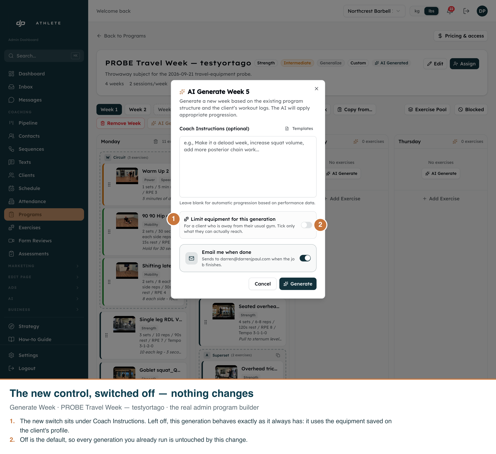
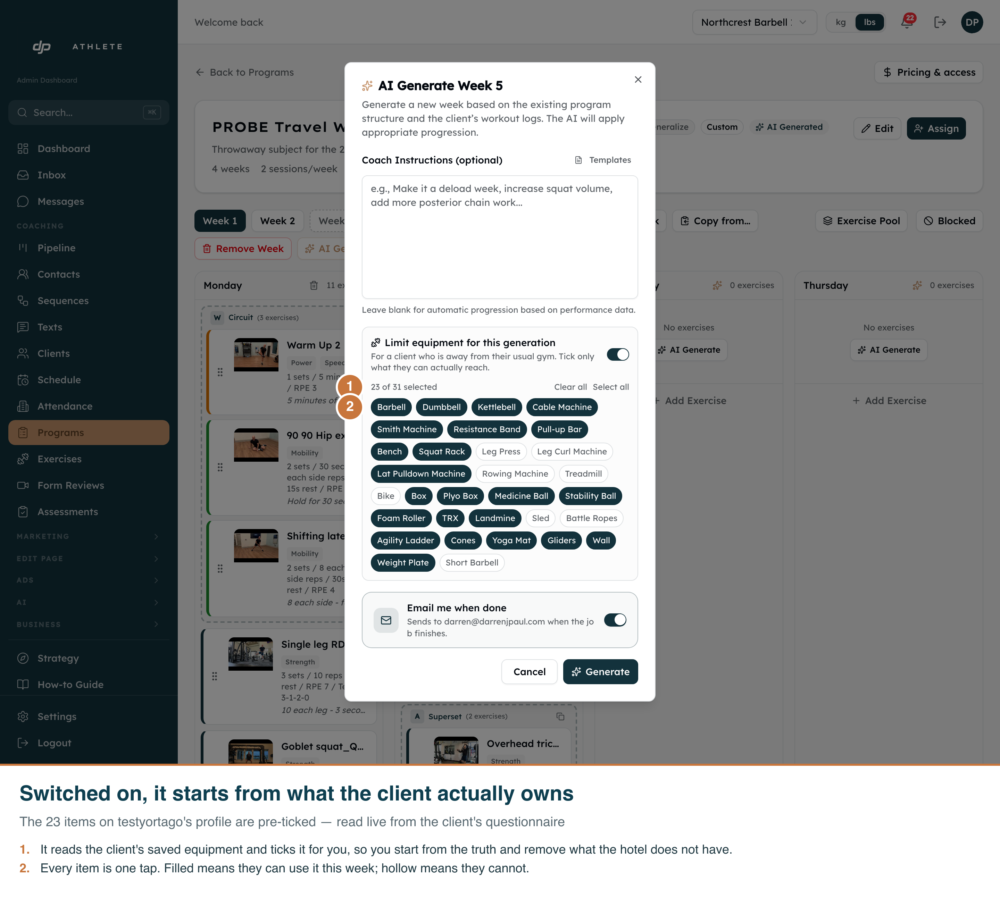
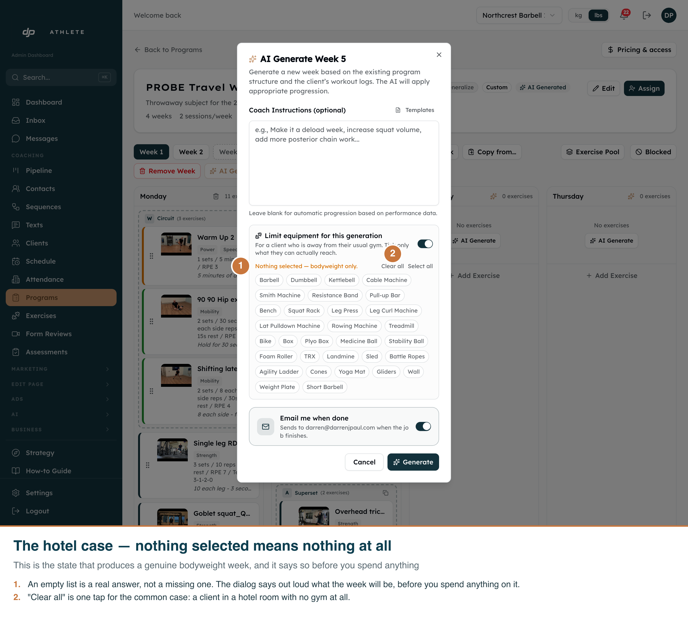
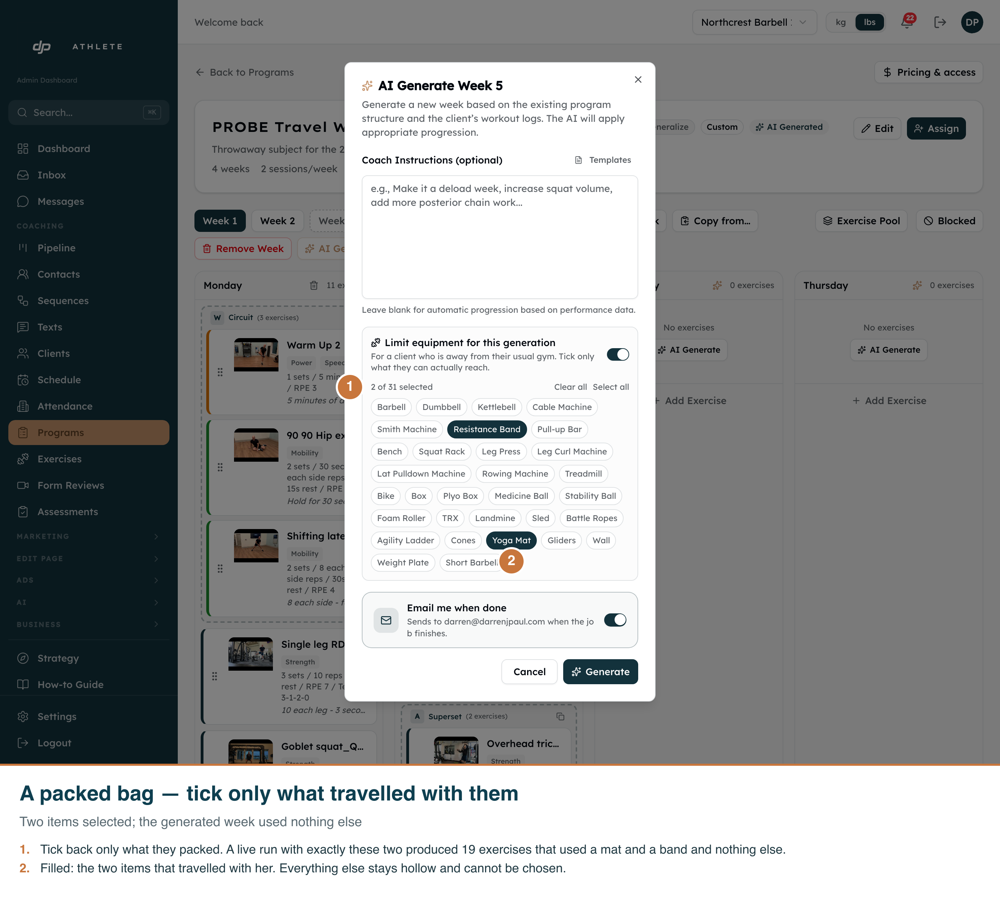

Branch worktree-travel-equipment-constraint · captured 2026-09-21 against the real admin app on
localhost:3050, dev clone only. Light theme only — the admin UI has no dark variant.
A coach asked for a "hotel no equipment week" for a travelling client and also typed "body weight focused". The generated week contained dumbbell, kettlebell, TRX, cable-machine, plyo-box and weight-plate work. In production that week was 42 slots, 31 of which needed equipment.
Two independent causes, and fixing only the first would not have helped:
| # | Cause | Consequence |
|---|---|---|
| 1 | The equipment set came only from the client's saved profile, unioned with equipment named in the coach's text — a union that can only grow. | "No equipment" names nothing to remove, so nothing was removed. There was no control anywhere to say otherwise. |
| 2 | filterByAvailableEquipment returned early on the is_bodyweight flag, before checking what the exercise actually requires. |
310 of the library's 420 bodyweight-flagged exercises also list equipment. All 310 bypassed the filter — TRX glides, hanging leg raises, a cable-machine stretch. |




Run through the real orchestrator against the dev clone, not the dev server: the web route only queues a
Firestore job, and the deployed function would have run the old code. Same program, same target week,
same client (testyortago@gmail.com, given a 23-item gym so that restricting it means something).
| Run | Constraint | Source | Library | Slots | Needing unavailable kit | Time |
|---|---|---|---|---|---|---|
| 1 | typed: "hotel with no gym. Body weight focused." | instructions | 917 → 100 | 23 | 0 | 239.2s |
| 2 | control — ordinary progression, no constraint | profile | 917 → 897 | 25 | 23 (correct) | 195.6s |
| 3 | ticked: yoga mat + resistance band | override | 917 → 257 | 19 | 0 | 155.6s |
| 4 | ticked nothing, but named "pull ups" | override | 917 → 104 | 25 | 2, both warned | 213.6s |
Run 2 is the presence control. Remove the constraint and the same program, week and client produce barbell, cable machine, TRX, dumbbell and pull-up-bar work — the reported bug, on demand. Without it, "zero equipment exercises" would only prove the generator was having a quiet day.
The coach ticked nothing but asked for pull ups by name. A named exercise still outranks the equipment list — so the week was generated and the coach was told, rather than the run being thrown away:
2 exercises in this week need equipment that was not available — pull_up_bar. For example "Pull ups_Back" (slot w3d2s4). You set no equipment at all was available this week. Swap these out, or re-generate with the equipment list corrected.
The warnings panel is not shown in a browser here. Rendering it for real needs a completed generation job, which needs the deployed Firebase function — a production deploy, which was out of scope overnight. The warning text itself is covered by unit tests and was produced by the live run above.